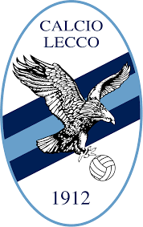

Lecco

Il L.R. Vicenza (acronimo di Lanerossi Vicenza), meglio noto come Vicenza, è una società calcistica italiana con sede nella città di Vicenza. Milita in Serie C, la terza divisione del campionato italiano di calcio.
Il Calcio Lecco 1912, meglio noto come Lecco, è una società calcistica italiana con sede nella città di Lecco. Milita in Serie C, la terza divisione del campionato italiano.
Fondato nel 1912, ha disputato tre campionati di Serie A (l'ultimo dei quali nella stagione 1966-1967), e dodici di Serie B, cui se ne aggiungono tre di Seconda Divisione nelle leghe predecessore degli anni Venti. Annovera nel suo palmarès la vittoria di una Coppa Italia Semiprofessionisti (1976-1977) in campo nazionale e di una Coppa Anglo-Italiana (1977) in ambito internazionale.
Tra i club che hanno militato in Serie A, i blucelesti occupano il 60º posto nella classifica perpetua dal 1929 e hanno la 65ª miglior tradizione sportiva.